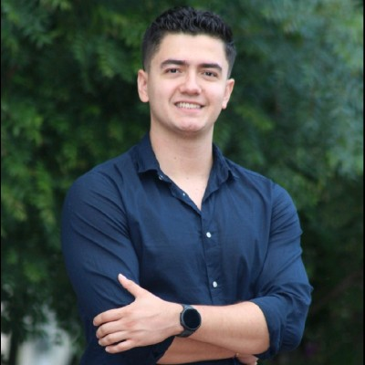
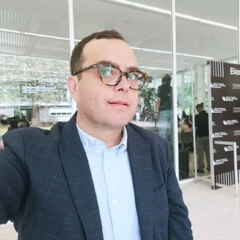
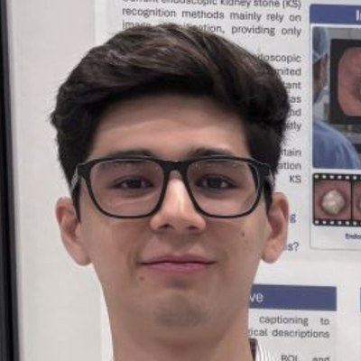

Program
11:00 – 11:10
Opening
Welcome and workshop overview
Dr. Iván Reyes Amezcua · Dr. Gilberto Ochoa-Ruiz · Tecnológico de Monterrey


11:10 – 11:40
Keynote
Machine learning systems in industry
Dr. Salvador Hinojosa
11:40 – 13:00
Accepted papers · 15 min talk + 5 min Q&A each
Paper presentations and authors
Session chair: M.Sc. Antonio Low

- PBS-FL: Anonymous Federated Learning with Verifiable Update InclusionRocío Aldeco-Pérez, Oscar Manuel Ruiz Hurtado · UNAM, Mexico
- From Hybrid Ensembles to Graph Models: An MLOps-Driven Comparison of Collaborative Filtering for Online JudgesWilson Julca-Mejía, Herminio Paucar-Curasma, Luzmila Elisa Pro-Concepción · UNMSM, Peru
- Retrieval-Verification Separation: A Dual-Metric Architecture for Self-Monitoring RAG SystemsJorge Gálvez, Ernesto Mendoza, Isaac Bolio, David Rodríguez · Universidad de Guadalajara, Mexico
- When the Baseline Chases the Plant: Self-Reference, Auditability and Data Lineage in a Production Photovoltaic Monitoring PipelineDaniel Romero Villacís, David Fiallos Chamorro · Tecnológico de Monterrey, Mexico · Sun Conservation, Ecuador
13:00 – 13:50
Tutorial
Hands-on MLOps
Dr. Gerardo Rodríguez-Hernández · M.Sc. Ricardo Valdez Hernández
13:50 – 14:00
Closing
Best Paper Award and closing remarks